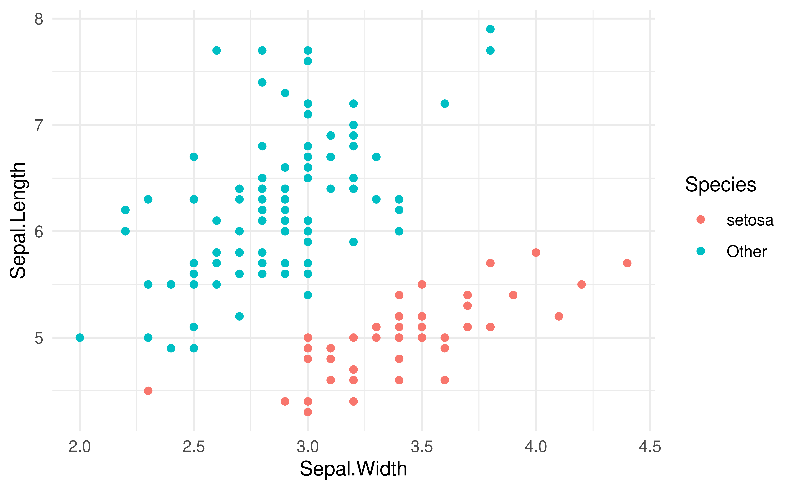

Youth Risk Behavior
Substance Abuse & Weight issues
Team Hull
Philip Wieczorek, Andrew Allan, Joshua Brown, Fengshou Miao
University of Edinburgh
2021-12-02
#Original Ideas
-CDC data from Youth Risk Behavior Surveillance System.
Violence; Unprotected sexual practice; Substance abuse; Tobacco use; Weight Issues; Lack of physical activity.
2 of the 6 risk behaviours
Our goals with this project were to…
Discover whether risky behavior such as “substance abuse” and “weight issues” may appear more or less frequently among different categorical variables such as sex, race, etc.
Model how risky behavior trends throughout different grades
Map important or interesting trends that we found along the way
Our Dataset: Substance Abuse
## Rows: 33,408
## Columns: 36
## Groups: YEAR, LocationDesc, Sample_Size, Pop_at_Grisk, Sex, Race, Grade, Greater_Risk_Data_Value, Greater_Risk_High_Confidence_Limit, Greater_Risk_Low_Confidence_Limit, Lesser_Risk_Low_Confidence_Limit, Lesser_Risk_High_Confidence_Limit, GeoLocation, QuestionCode, LocationId [33,408]
## $ YEAR <int> 2017, 2011, 2013, 2017, 2011, …
## $ LocationAbbr <chr> "GU", "NM", "ND", "PW", "CM", …
## $ LocationDesc <chr> "Guam", "New Mexico", "North D…
## $ DataSource <chr> "YRBSS", "YRBSS", "YRBSS", "YR…
## $ Topic <chr> "Alcohol and Other Drug Use", …
## $ Subtopic <chr> "Alcohol Use", "Alcohol Use", …
## $ ShortQuestionText <chr> "Ever alcohol use", "Ever alco…
## $ Greater_Risk_Question <chr> "Ever drank alcohol", "Ever dr…
## $ Description <chr> "other than a few sips", "othe…
## $ Data_Value_Symbol <chr> "%", "%", "%", "%", "%", "%", …
## $ Data_Value_Type <chr> "Percentage", "Percentage", "P…
## $ Greater_Risk_Data_Value <dbl> NA, NA, NA, NA, NA, NA, NA, NA…
## $ Greater_Risk_Data_Value_Footnote_Symbol <lgl> NA, NA, NA, NA, NA, NA, NA, NA…
## $ Greater_Risk_Data_Value_Footnote <lgl> NA, NA, NA, NA, NA, NA, NA, NA…
## $ Greater_Risk_Low_Confidence_Limit <dbl> NA, NA, NA, NA, NA, NA, NA, NA…
## $ Greater_Risk_High_Confidence_Limit <dbl> NA, NA, NA, NA, NA, NA, NA, NA…
## $ Lesser_Risk_Question <chr> "Never drank alcohol", "Never …
## $ Lesser_Risk_Data_Value <dbl> NA, NA, NA, NA, NA, NA, NA, NA…
## $ Lesser_Risk_Data_Value_Footnote_Symbol <lgl> NA, NA, NA, NA, NA, NA, NA, NA…
## $ Lesser_Risk_Data_Value_Footnote <lgl> NA, NA, NA, NA, NA, NA, NA, NA…
## $ Lesser_Risk_Low_Confidence_Limit <dbl> NA, NA, NA, NA, NA, NA, NA, NA…
## $ Lesser_Risk_High_Confidence_Limit <dbl> NA, NA, NA, NA, NA, NA, NA, NA…
## $ Sample_Size <int> 30, 14, 0, 1, 16, 8, 7, 99, 0,…
## $ Sex <chr> "Male", "Total", "Male", "Fema…
## $ Race <chr> "Asian", "Asian", "White", "As…
## $ Grade <chr> "8th", "8th", "6th", "8th", "7…
## $ GeoLocation <chr> "(13.444304, 144.793731)", "(3…
## $ TopicId <chr> "C03", "C03", "C03", "C03", "C…
## $ SubTopicID <chr> "C14", "C14", "C14", "C14", "C…
## $ QuestionCode <chr> "M26", "M26", "M26", "M26", "M…
## $ LocationId <chr> "66", "35", "38", "204", "122"…
## $ StratID1 <chr> "S8", "S1", "S8", "S7", "S8", …
## $ StratID2 <chr> "R11", "R11", "R15", "R11", "R…
## $ StratID3 <chr> "G19", "G19", "G17", "G19", "G…
## $ StratificationType <chr> "Territory", "State", "State",…
## $ Pop_at_Grisk <dbl> NA, NA, NA, NA, NA, NA, NA, NA…Our Dataset: Weight Issues
## Rows: 40,032
## Columns: 36
## Groups: YEAR, LocationDesc, Sample_Size, Pop_at_Grisk, Sex, Race, Grade, Greater_Risk_Data_Value, Greater_Risk_High_Confidence_Limit, Greater_Risk_Low_Confidence_Limit, Lesser_Risk_High_Confidence_Limit, Lesser_Risk_Low_Confidence_Limit, GeoLocation, QuestionCode, LocationId [40,032]
## $ YEAR <int> 1995, 2001, 1999, 2013, 1999, …
## $ LocationAbbr <chr> "GU", "ME", "ND", "PW", "DA", …
## $ LocationDesc <chr> "Guam", "Maine", "North Dakota…
## $ DataSource <chr> "YRBSS", "YRBSS", "YRBSS", "YR…
## $ Topic <chr> "Weight Control", "Weight Cont…
## $ Subtopic <chr> "Weight Control", "Weight Cont…
## $ ShortQuestionText <chr> "Weight loss", "Weight loss", …
## $ Greater_Risk_Question <chr> "Were not trying to lose weigh…
## $ Description <chr> "NULL", "NULL", "NULL", "NULL"…
## $ Data_Value_Symbol <chr> "%", "%", "%", "%", "%", "%", …
## $ Data_Value_Type <chr> "Percentage", "Percentage", "P…
## $ Greater_Risk_Data_Value <dbl> NA, NA, NA, NA, NA, NA, NA, NA…
## $ Greater_Risk_Data_Value_Footnote_Symbol <lgl> NA, NA, NA, NA, NA, NA, NA, NA…
## $ Greater_Risk_Data_Value_Footnote <lgl> NA, NA, NA, NA, NA, NA, NA, NA…
## $ Greater_Risk_Low_Confidence_Limit <dbl> NA, NA, NA, NA, NA, NA, NA, NA…
## $ Greater_Risk_High_Confidence_Limit <dbl> NA, NA, NA, NA, NA, NA, NA, NA…
## $ Lesser_Risk_Question <chr> "Were trying to lose weight", …
## $ Lesser_Risk_Data_Value <dbl> NA, NA, NA, NA, NA, NA, NA, NA…
## $ Lesser_Risk_Data_Value_Footnote_Symbol <lgl> NA, NA, NA, NA, NA, NA, NA, NA…
## $ Lesser_Risk_Data_Value_Footnote <lgl> NA, NA, NA, NA, NA, NA, NA, NA…
## $ Lesser_Risk_Low_Confidence_Limit <dbl> NA, NA, NA, NA, NA, NA, NA, NA…
## $ Lesser_Risk_High_Confidence_Limit <dbl> NA, NA, NA, NA, NA, NA, NA, NA…
## $ Sample_Size <int> 0, 0, 4, 0, 9, 0, 0, 14, 17, 5…
## $ Sex <chr> "Female", "Total", "Male", "Fe…
## $ Race <chr> "Multiple Race", "White", "Asi…
## $ Grade <chr> "6th", "6th", "7th", "Total", …
## $ GeoLocation <chr> "(13.444304, 144.793731)", "(4…
## $ TopicId <chr> "C33", "C33", "C33", "C33", "C…
## $ SubTopicID <chr> "C34", "C34", "C34", "C34", "C…
## $ QuestionCode <chr> "M39", "M39", "M39", "M38", "M…
## $ LocationId <chr> "66", "23", "38", "204", "126"…
## $ StratID1 <chr> "S7", "S1", "S8", "S7", "S8", …
## $ StratID2 <chr> "R16", "R15", "R11", "R15", "R…
## $ StratID3 <chr> "G17", "G17", "G18", "G1", "G1…
## $ StratificationType <chr> "Territory", "State", "State",…
## $ Pop_at_Grisk <dbl> NA, NA, NA, NA, NA, NA, NA, NA…Substance Abuse over Time
## `summarise()` has grouped output by 'Sex'. You can override using the `.groups` argument.
Substance Abuse over Time
Females at lower risk overall than men to abuse substances
Risk of substance abuse has been going down over time
- Although there was a slight resurgence in the latest year collected
Weight Issues and Geography

Weight Issues and Geography
Overall, USA has a similar incidence of “weight issues” across the board
At first glance, seems as if coasts (generally but not always more urban) exhibit more weight issues
Some spread of rural across the board, a number of islands s.a. Northern Mariana Islands and especially American Samoa trending towards fewer weight issues
- This could have to do with culture; heavier weight more accepted/admired in Samoan culture
Percentage Describing Themselves as Overweight
## `summarise()` has grouped output by 'Sex'. You can override using the `.groups` argument.
Percentage Describing Themselves as Overweight
Females tend to believe they are overweight more frequently than men
Females have trended down a bit, but has gone up a little bit in recent years, although remaining below 30%
Males have maintained between 22% and 25%, not much variation over time
What Could We Have Included?
- Comparing common trends between the two datasets (Is geography correlated?)
<<<<<<< HEAD - Comparing all 6 risk factors in some way. or comparing the 2 risk factors over different school levels. ======= - Looking for more opportunities to find correlation, regression, other trends >>>>>>> c0c2b6e88d166025cc4b7d8a408a2505f18bfd6d
- Perhaps creating a literal map with a “heat map” with an additional package
- Would give us slightly more precise visualization with respect to geography
Overall Conclusions
<<<<<<< HEAD #Data Collection
Our data was collected from the Youth Risk Behavior Surveillance System(YRBSS), for the Centers for Disease Control and Prevention (CDC) and can be vied on the CDCs website.
<<<<<<< HEAD - Females have greater incidence of “weight issues” - Males more likely to be exposed to “substance abuse” - Some progress made in both, but still plaguing our generation - Important topic to discuss –> societal relevance, mapping the impact of body positivity and substance abuse reduction campaigns
reveal.js
The presentation is created using the
reveal.jspackageYou can create a slide show broken up into sections by using the # and ## heading tags
You can also create a new slide without a header using a horizontal rule (—-)
- You can also add pauses between content on a slide using (“. . .”)
Like this.
…or using “::: fragment”
Like this.
Layouts
You can use plain text
- or bullet points
because you can combine HTML and Markdown syntax.
*You can also add footnotes
Plots

Plot and text
- Some text
- goes here
Different widths
- Some text
- goes here
Tables
If you want to generate a table, make sure it is in the HTML format (instead of Markdown or other formats), e.g.,
Images

Or you can also include a full page image. See next slide.
Math Expressions
You can write LaTeX math expressions inside a pair of dollar signs ($…$), e.g. \(\alpha+\beta\). You can use the display style with double dollar signs:
\[\bar{X}=\frac{1}{n}\sum_{i=1}^nX_i\]
Feeling adventurous?
You can learn more about the options available at the following pages:
c0c2b6e88d166025cc4b7d8a408a2505f18bfd6d